第 100–91 名
200%
AKMU
第 100 名
Charlie Brown
The Kim Sisters
第 99 名
Shangri-La
VIXX
第 98 名

0X1=Lovesong (I Know I Love You)
TOMORROW X TOGETHER feat Seori
第 97 名
Cherry Blossom Ending
Busker Busker
第 96 名
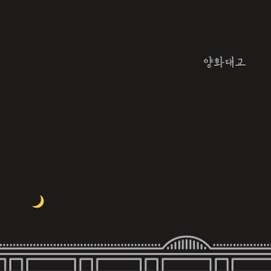
Yanghwa BRDG
Zion.T
第 95 名
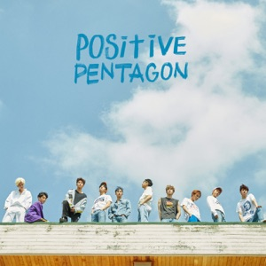
Shine
Pentagon
第 94 名
Morning Dew
Yang Hee Eun
第 93 名
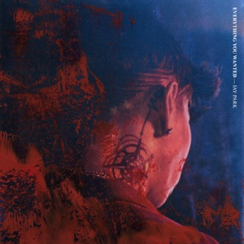
All I Wanna Do
Jay Park feat. Hoody & Loco
第 92 名
Me Gustas Tu
GFRIEND
第 91 名
第 90–81 名
The Boy in the Yellow Shirt
Han Myung-sook
第 90 名
Next Level
Aespa
第 89 名
Hot
1TYM
第 88 名
Décalcomanie
Mamamoo
第 87 名
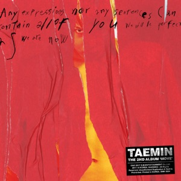
Move
Taemin
第 86 名
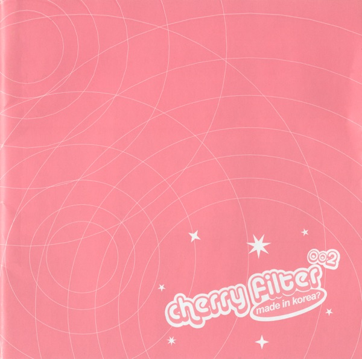
Sweet Little Kitty
Cherry Filter
第 85 名
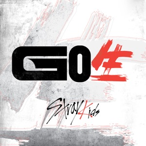
God’s Menu
Stray Kids
第 84 名
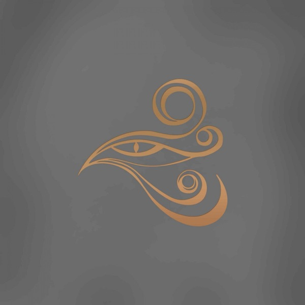
To You
Shin Hae-chul
第 83 名
Black Happiness
Yoonmirae
第 82 名
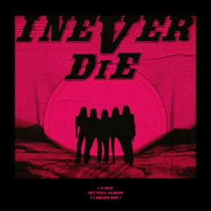
Tomboy
(G)I-DLE
第 81 名
第 80–71 名
Mr. Simpatico
Pippi Band
第 80 名
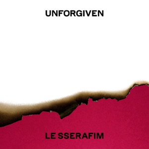
Antifragile
LE SSERAFIM
第 79 名
Just Right
GOT7
第 78 名
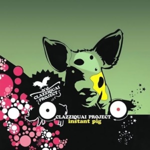
Sweety
Clazziquai
第 77 名
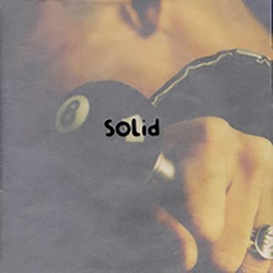
Holding on to the End of the Night
Solid
第 76 名
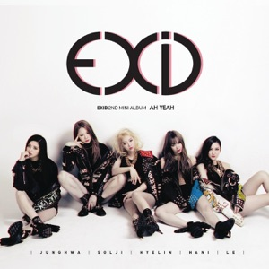
Up & Down
EXID
第 75 名
Dramarama
Monsta X
第 74 名
The Woman
Baek Z Young
第 73 名
Love Scenario
iKON
第 72 名
Black Cat Nero,
Turbo
第 71 名
第 70–61 名
Love Love Love
Epik High
第 70 名
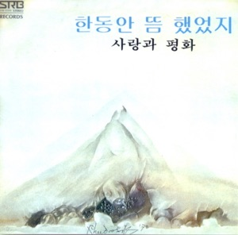
It’s Been a Long Time
Love and Peace
第 69 名
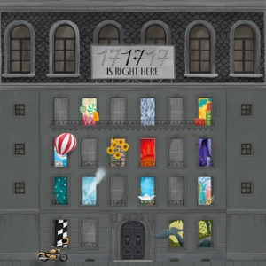
Very Nice
SEVENTEEN
第 68 名
Alone
Sistar
第 67 名
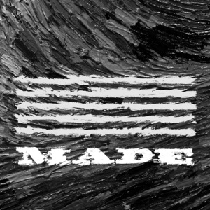
Bang Bang Bang
BIGBANG
第 66 名
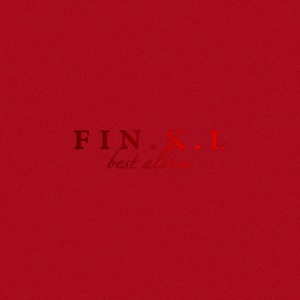
To My Boyfriend
Fin.K.L
第 65 名
Speed Up Losers
Crying Nut
第 64 名
Eve’s Warning
Park Mi Kyung
第 63 名
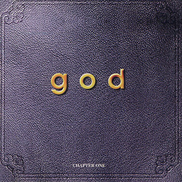
To Mother
g.o.d.
第 62 名
Camellia Girl
Lee Mija
第 61 名
第 60–51 名
Catallena
Orange Caramel
第 60 名
Cherry Bomb
NCT 127
第 59 名
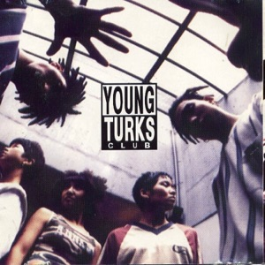
Affection
Young Turks Club
第 58 名
Hymn of Death
Yun Sim-deok
第 57 名
One Cup of Coffee
Pearl Sisters
第 56 名
Run to You
DJ Doc
第 55 名
Because I Love You
Yoo Jae-ha
第 54 名
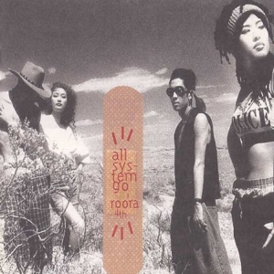
3!4!
Roo’Ra
第 53 名
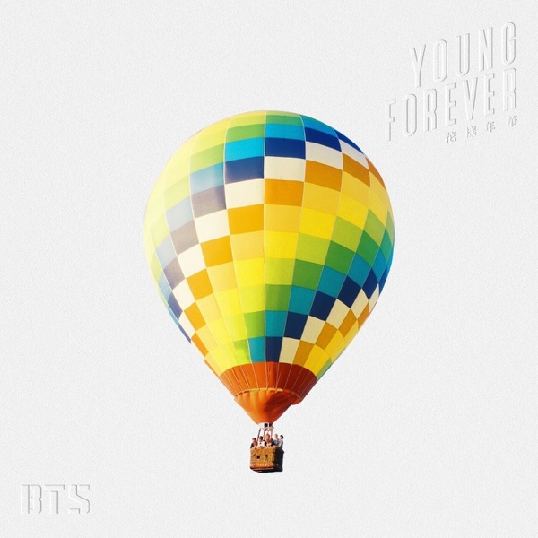
I Need U
BTS
第 52 名
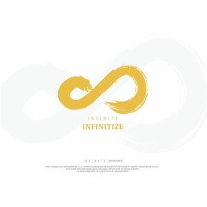
The Chaser
Infinite
第 51 名
第 50–41 名
When My Loneliness Calls to You
Jang Pill Soon
第 50 名
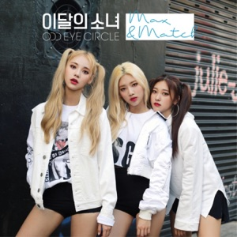
Girl Front
Loona / Odd Eye Circle
第 49 名
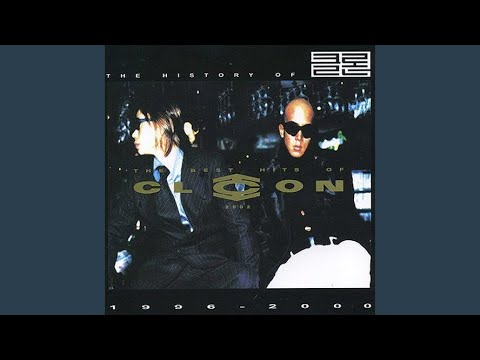
Kung Ddari Sha Bah Rah
Clon
第 48 名
That’s Only My World
Deulgukhwa
第 47 名
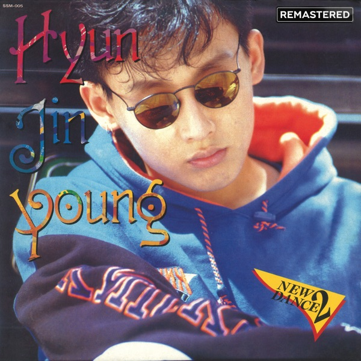
You in Vague Memory
Hyun Jin-young
第 46 名
Bo Peep Bo Peep
T-ara
第 45 名
Hands Up
2PM
第 44 名
Bingle Bingle
Nami
第 43 名
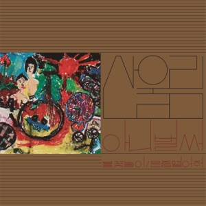
Already Now
Sanullim
第 42 名
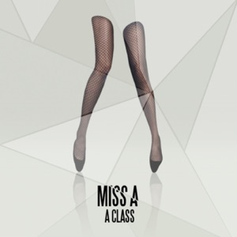
Bad Girl Good Girl
Miss A
第 41 名
第 40–31 名
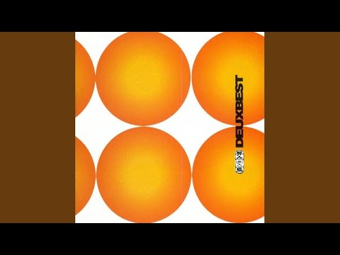
Turn Around and Look at Me
Deux
第 40 名
Wannabe
ITZY
第 39 名
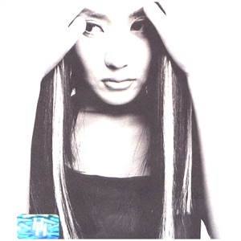
Poison
Uhm Jung Hwa
第 38 名
It’s a Lie
Kim Choo-ja
第 37 名
Rainism
Rain
第 36 名
Pierrot Laughs at Us
Kim Wan-sun
第 35 名
未上架Growl
EXO
第 34 名
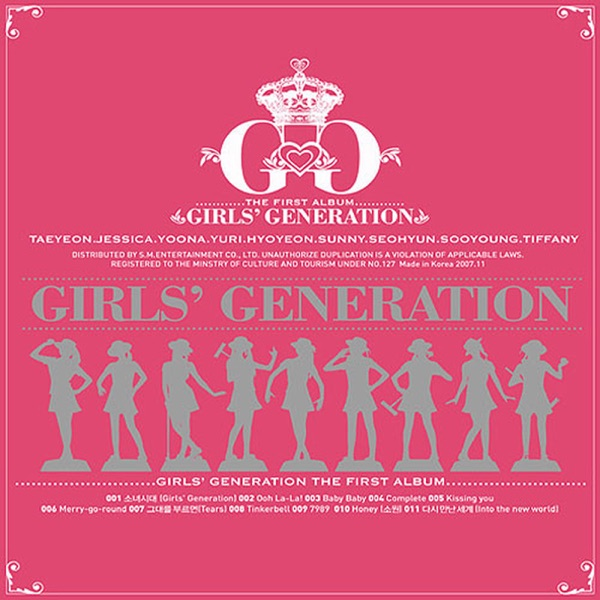
Into the New World
Girls’ Generation
第 33 名
When Love Passes By
Lee Moon-sae
第 32 名
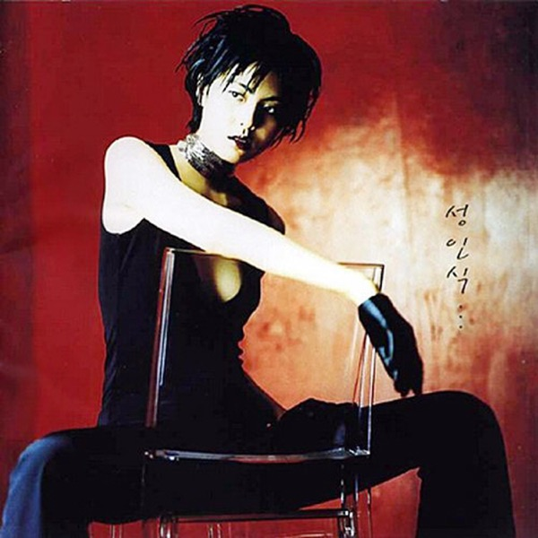
Coming of Age Ceremony
parkjiyoon
第 31 名
第 30–21 名
Haenim
Kim Jung Mi
第 30 名
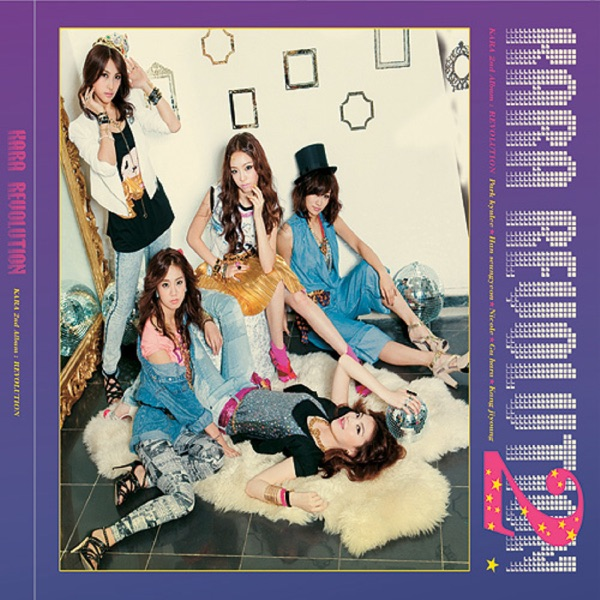
Mr.
KARA
第 29 名
Farewell
Patti Kim
第 28 名
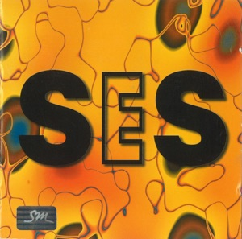
(Cause) I’m Your Girl
S.E.S.
第 27 名
Bubble Pop
Hyuna
第 26 名
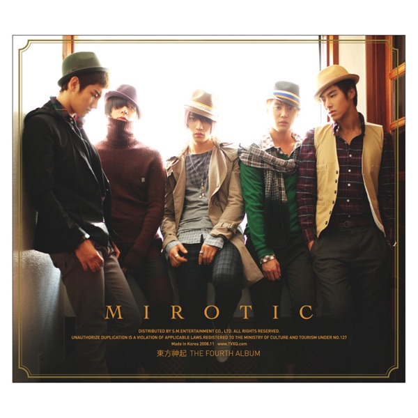
Mirotic
TVXQ
第 25 名
10 Minutes
Lee Hyori
第 24 名

Gangnam Style
PSY
第 23 名
Chau Chau
Deli Spice
第 22 名
Abracadabra
Brown Eyed Girls
第 21 名
第 20–11 名
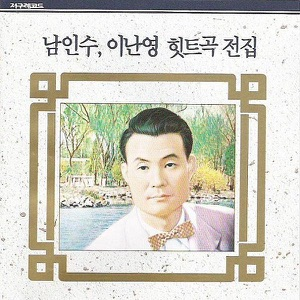
Tears of Mokpo
Lee Nan Young
第 20 名
Ditto
NewJeans
第 19 名
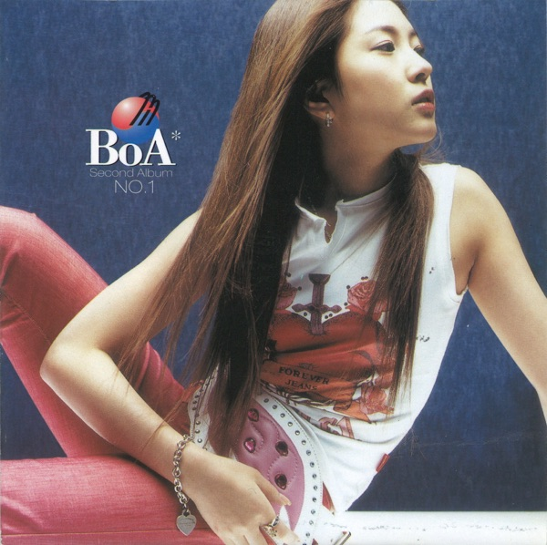
No. 1
BoA
第 18 名
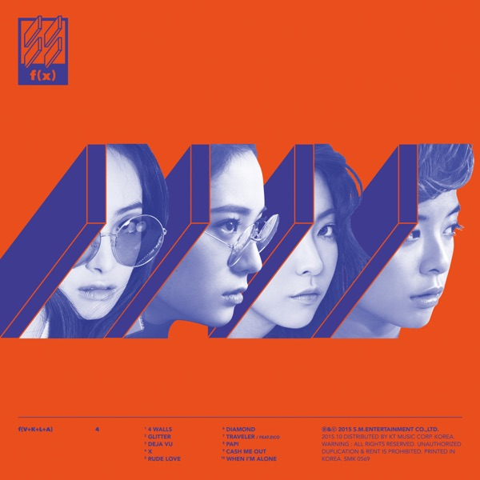
4 Walls
f(x)
第 17 名
Lucifer
SHINee
第 16 名
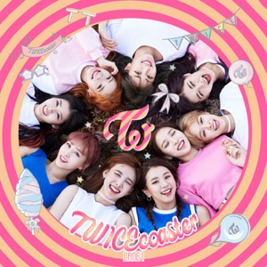
TT
TWICE
第 15 名
Beautiful Woman
Shin Joong Hyun and Yup Juns
第 14 名
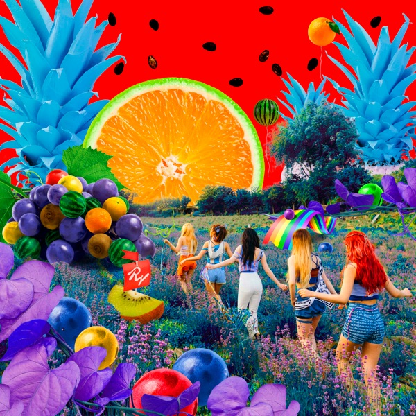
Red Flavor
Red Velvet
第 13 名
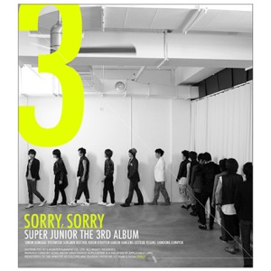
Sorry, Sorry
Super Junior
第 12 名
Wa
Lee Jung Hyun
第 11 名
第 10–1 名
Tell Me
Wonder Girls
第 10 名
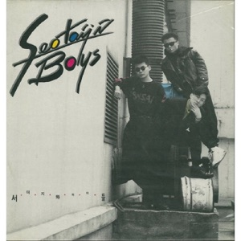
I Know
Seo Taiji and Boys
第 9 名
I Am the Best
2NE1
第 8 名
Haru Haru
BIGBANG
第 7 名
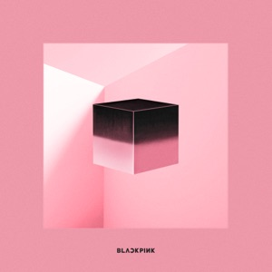
DDU-DU DDU-DU
Blackpink
第 6 名
Short Hair
Cho Yong Pil
第 5 名
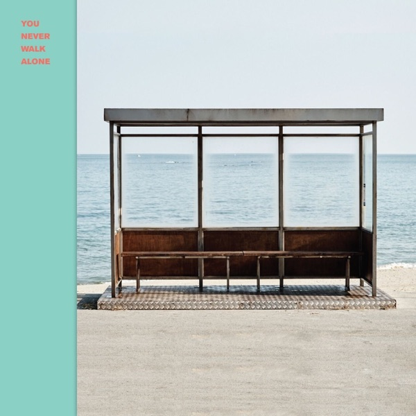
Spring Day
BTS
第 4 名
Good Day
IU
第 3 名
Candy
H.O.T.
第 2 名
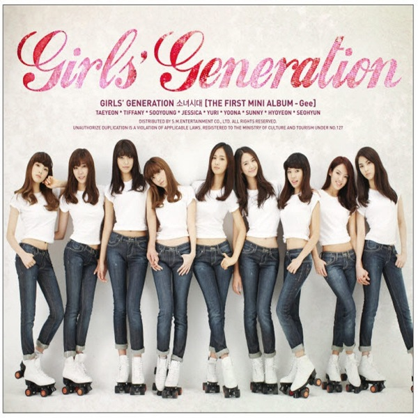
Gee
Girls’ Generation
第 1 名
找不到符合的作品，換個關鍵字試試。